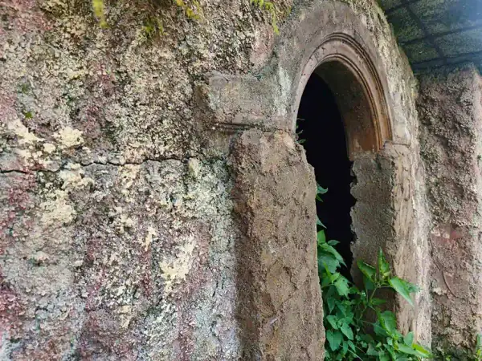

Ada perasaan yang tidak ada kata-kata tepat untuk menggambarkannya: berbaring di atas sleeping pad di bawah langit malam pegunungan yang dipenuhi ribuan bintang, jauh dari polusi cahaya kota, dengan secangkir teh hangat di tangan. Pengalaman itulah yang menunggu Anda di Batu Malang.
1. Mengapa Batu Malang Adalah Surga Stargazing di Jawa Timur?
Langit malam adalah sumber daya alam paling terancam punah di abad ke-21, bukan oleh polutan kimia, melainkan oleh polusi cahaya dari perkotaan yang terus berkembang. Menurut data dari Light Pollution Atlas, lebih dari 80 persen penduduk dunia tidak pernah melihat Bima Sakti dengan mata telanjang dalam kehidupan mereka. Di sinilah Batu Malang menjadi harta karun yang sesungguhnya.
Dengan posisi geografis di dataran tinggi yang dikelilingi hutan pinus lebat, Batu Malang secara alami terlindungi dari kilatan cahaya kota Malang dan Surabaya yang berada di dataran yang lebih rendah. Di malam yang cerah tanpa bulan, Anda dapat dengan jelas menyaksikan sabuk Bima Sakti melintasi langit seperti sungai bercahaya, momen yang akan mengubah perspektif Anda tentang skala semesta selamanya.
"Malam pertama saya melihat Bima Sakti dengan mata telanjang di Batu Malang adalah malam ketika saya sadar betapa kecilnya kekhawatiran-kekhawatiran duniawi saya." - Adiel Ebert
1.1 Waktu Terbaik untuk Stargazing di Batu Malang
Waktu paling ideal untuk stargazing adalah di sekitar fase bulan baru (new moon) ketika cahaya bulan tidak mengganggu visibilitas bintang. Secara musiman, bulan April hingga Oktober (musim kemarau) menawarkan langit yang paling jernih dengan tingkat kelembapan udara yang rendah sehingga bintang terlihat lebih tajam dan banyak.
Perlengkapan Stargazing Esensial:
- Aplikasi peta bintang seperti Stellarium atau SkySafari (dapat digunakan offline).
- Senter merah (red light) untuk membaca peta tanpa merusak adaptasi mata terhadap gelap.
2. Cara Mempersiapkan Mata untuk Melihat Lebih Banyak Bintang
Mata manusia membutuhkan waktu sekitar 20–30 menit untuk beradaptasi penuh dengan kondisi gelap, sebuah proses yang disebut dark adaptation. Selama proses ini, pupil melebar secara maksimal dan sel-sel fotoreseptor sensitif cahaya redup (disebut sel batang atau rod cells) di retina mencapai sensitivitas puncaknya. Satu kilatan sinar dari ponsel atau senter putih dapat menghancurkan adaptasi ini dan memaksa proses pengulangan dari awal.
Untuk memulai sesi stargazing Anda, matikan semua sumber cahaya di sekitar area kemping sekitar 30 menit setelah kegelapan penuh. Berbaring telentang dengan kepala menyandar bantal atau sleeping pad menghadap langit langsung memberikan pemandangan yang jauh lebih luas dibanding berdiri dan menengadahkan kepala. Posisi ini juga memungkinkan Anda bertahan untuk mengamati langit selama berjam-jam tanpa kelelahan otot leher.
- Gunakan Senter Merah: Cahaya merah tidak merusak dark adaptation. Banyak headlamp modern memiliki mode cahaya merah yang bisa diaktifkan dengan menekan tombol khusus.
- Hindari Layar Ponsel: Mode malam dengan kecerahan terendah sekalipun masih cukup untuk mengganggu adaptasi mata Anda. Unduh peta bintang sebelumnya dan gunakan mode layar merah jika tersedia.
- Kenakan Pakaian Hangat Berlapis: Berbaring diam di bawah langit malam membuat tubuh kehilangan panas jauh lebih cepat daripada saat bergerak. Jaket tebal dan sleeping bag sangat direkomendasikan.
3. Mengenal Konstelasi yang Terlihat dari Batu Malang
Posisi Batu Malang di lintang selatan sekitar 7–8 derajat selatan khatulistiwa memberikan keuntungan unik: Anda bisa melihat sebagian besar konstelasi belahan bumi utara sekaligus konstelasi belahan bumi selatan yang tidak terlihat dari Eropa atau Amerika Utara. Ini menjadikan langit malam Batu Malang sebagai salah satu yang paling kaya dan beragam di dunia.
Beberapa konstelasi ikonik yang mudah diidentifikasi tanpa teleskop antara lain Orion dengan tiga bintang sabuknya yang terkenal (Alnitak, Alnilam, dan Mintaka), Scorpius yang melintang di selatan dengan bintang merah Antares yang terang, dan Crux (Salib Selatan) yang menjadi penunjuk arah selatan yang akurat bagi para pelaut kuno. Belajar mengenali konstelasi ini adalah petualangan intelektual yang akan terus berlanjut jauh setelah perjalanan kemping Anda berakhir.
4. FAQ Seputar Stargazing Saat Kemping
Adiel Ebert Nakula Shandy
Senior Outdoor Enthusiast & Web Developer. Pengamat langit malam yang percaya bahwa setiap bintang punya cerita.